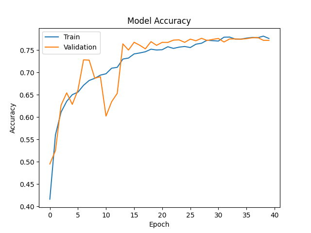
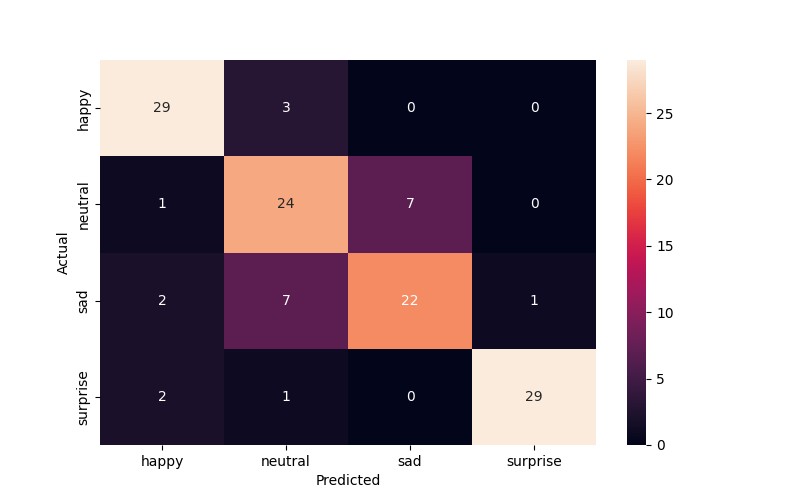
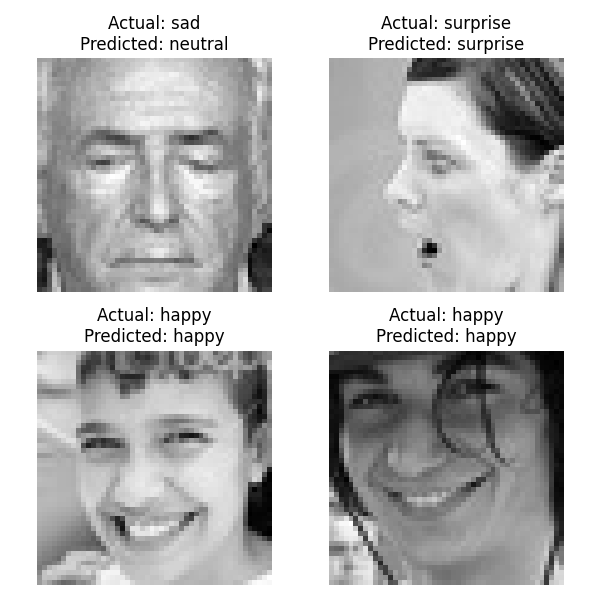

        <html>
        <head><title>Model Summary - 2024-04-10 14:43:33</title></head>
        <body>
        <h1>Model Configuration</h1>
        <pre>model:
  compile:
    learning_rate: 0.001
    optimizer: Adam
    optimizer_name: adam
  data:
    color_layers: 1
    color_mode: grayscale
    img_height: 48
    img_width: 48
    use_data_loaders: true
  layers:
  - filters: 64
    kernel_size:
    - 2
    - 2
    padding: same
    type: Conv2D
  - type: BatchNormalization
  - alpha: 0.1
    type: LeakyReLU
  - pool_size:
    - 2
    - 2
    type: MaxPooling2D
  - filters: 128
    kernel_size:
    - 2
    - 2
    padding: same
    type: Conv2D
  - type: BatchNormalization
  - alpha: 0.1
    type: LeakyReLU
  - pool_size:
    - 2
    - 2
    type: MaxPooling2D
  - filters: 256
    kernel_size:
    - 2
    - 2
    padding: same
    type: Conv2D
  - type: BatchNormalization
  - alpha: 0.1
    type: LeakyReLU
  - pool_size:
    - 2
    - 2
    type: MaxPooling2D
  - filters: 512
    kernel_size:
    - 2
    - 2
    padding: same
    type: Conv2D
  - type: BatchNormalization
  - alpha: 0.1
    type: LeakyReLU
  - pool_size:
    - 2
    - 2
    type: MaxPooling2D
  - filters: 128
    kernel_size:
    - 2
    - 2
    padding: same
    type: Conv2D
  - type: BatchNormalization
  - alpha: 0.1
    type: LeakyReLU
  - pool_size:
    - 2
    - 2
    type: MaxPooling2D
  - type: Flatten
  - activation: relu
    type: Dense
    units: 512
  - activation: relu
    type: Dense
    units: 128
  - type: Dense
    units: 64
  - type: BatchNormalization
  - type: ReLU
  - activation: softmax
    type: Dense
    units: 4
  train:
    batch_size: 16
    epochs: 40
    patience: 7
</pre>
        <h1>Model Summary</h1>
        <pre>Model: "sequential"
┏━━━━━━━━━━━━━━━━━━━━━━━━━━━━━━━━━━━━━━┳━━━━━━━━━━━━━━━━━━━━━━━━━━━━━┳━━━━━━━━━━━━━━━━━┓
┃ Layer (type)                         ┃ Output Shape                ┃         Param # ┃
┡━━━━━━━━━━━━━━━━━━━━━━━━━━━━━━━━━━━━━━╇━━━━━━━━━━━━━━━━━━━━━━━━━━━━━╇━━━━━━━━━━━━━━━━━┩
│ conv2d (Conv2D)                      │ (None, 48, 48, 64)          │             320 │
├──────────────────────────────────────┼─────────────────────────────┼─────────────────┤
│ batch_normalization                  │ (None, 48, 48, 64)          │             256 │
│ (BatchNormalization)                 │                             │                 │
├──────────────────────────────────────┼─────────────────────────────┼─────────────────┤
│ leaky_re_lu (LeakyReLU)              │ (None, 48, 48, 64)          │               0 │
├──────────────────────────────────────┼─────────────────────────────┼─────────────────┤
│ max_pooling2d (MaxPooling2D)         │ (None, 24, 24, 64)          │               0 │
├──────────────────────────────────────┼─────────────────────────────┼─────────────────┤
│ conv2d_1 (Conv2D)                    │ (None, 24, 24, 128)         │          32,896 │
├──────────────────────────────────────┼─────────────────────────────┼─────────────────┤
│ batch_normalization_1                │ (None, 24, 24, 128)         │             512 │
│ (BatchNormalization)                 │                             │                 │
├──────────────────────────────────────┼─────────────────────────────┼─────────────────┤
│ leaky_re_lu_1 (LeakyReLU)            │ (None, 24, 24, 128)         │               0 │
├──────────────────────────────────────┼─────────────────────────────┼─────────────────┤
│ max_pooling2d_1 (MaxPooling2D)       │ (None, 12, 12, 128)         │               0 │
├──────────────────────────────────────┼─────────────────────────────┼─────────────────┤
│ conv2d_2 (Conv2D)                    │ (None, 12, 12, 256)         │         131,328 │
├──────────────────────────────────────┼─────────────────────────────┼─────────────────┤
│ batch_normalization_2                │ (None, 12, 12, 256)         │           1,024 │
│ (BatchNormalization)                 │                             │                 │
├──────────────────────────────────────┼─────────────────────────────┼─────────────────┤
│ leaky_re_lu_2 (LeakyReLU)            │ (None, 12, 12, 256)         │               0 │
├──────────────────────────────────────┼─────────────────────────────┼─────────────────┤
│ max_pooling2d_2 (MaxPooling2D)       │ (None, 6, 6, 256)           │               0 │
├──────────────────────────────────────┼─────────────────────────────┼─────────────────┤
│ conv2d_3 (Conv2D)                    │ (None, 6, 6, 512)           │         524,800 │
├──────────────────────────────────────┼─────────────────────────────┼─────────────────┤
│ batch_normalization_3                │ (None, 6, 6, 512)           │           2,048 │
│ (BatchNormalization)                 │                             │                 │
├──────────────────────────────────────┼─────────────────────────────┼─────────────────┤
│ leaky_re_lu_3 (LeakyReLU)            │ (None, 6, 6, 512)           │               0 │
├──────────────────────────────────────┼─────────────────────────────┼─────────────────┤
│ max_pooling2d_3 (MaxPooling2D)       │ (None, 3, 3, 512)           │               0 │
├──────────────────────────────────────┼─────────────────────────────┼─────────────────┤
│ conv2d_4 (Conv2D)                    │ (None, 3, 3, 128)           │         262,272 │
├──────────────────────────────────────┼─────────────────────────────┼─────────────────┤
│ batch_normalization_4                │ (None, 3, 3, 128)           │             512 │
│ (BatchNormalization)                 │                             │                 │
├──────────────────────────────────────┼─────────────────────────────┼─────────────────┤
│ leaky_re_lu_4 (LeakyReLU)            │ (None, 3, 3, 128)           │               0 │
├──────────────────────────────────────┼─────────────────────────────┼─────────────────┤
│ max_pooling2d_4 (MaxPooling2D)       │ (None, 1, 1, 128)           │               0 │
├──────────────────────────────────────┼─────────────────────────────┼─────────────────┤
│ flatten (Flatten)                    │ (None, 128)                 │               0 │
├──────────────────────────────────────┼─────────────────────────────┼─────────────────┤
│ dense (Dense)                        │ (None, 512)                 │          66,048 │
├──────────────────────────────────────┼─────────────────────────────┼─────────────────┤
│ dense_1 (Dense)                      │ (None, 128)                 │          65,664 │
├──────────────────────────────────────┼─────────────────────────────┼─────────────────┤
│ dense_2 (Dense)                      │ (None, 64)                  │           8,256 │
├──────────────────────────────────────┼─────────────────────────────┼─────────────────┤
│ batch_normalization_5                │ (None, 64)                  │             256 │
│ (BatchNormalization)                 │                             │                 │
├──────────────────────────────────────┼─────────────────────────────┼─────────────────┤
│ re_lu (ReLU)                         │ (None, 64)                  │               0 │
├──────────────────────────────────────┼─────────────────────────────┼─────────────────┤
│ dense_3 (Dense)                      │ (None, 4)                   │             260 │
└──────────────────────────────────────┴─────────────────────────────┴─────────────────┘
 Total params: 1,096,452 (4.18 MB)
 Trainable params: 1,094,148 (4.17 MB)
 Non-trainable params: 2,304 (9.00 KB)
</pre>
        <h2>Test Accuracy</h2>
        <p>
1/8 ━━━━━━━━━━━━━━━━━━━━ 0s 16ms/step - accuracy: 0.8750 - loss: 0.2456
8/8 ━━━━━━━━━━━━━━━━━━━━ 0s 2ms/step - accuracy: 0.8277 - loss: 0.4404 

1/8 ━━━━━━━━━━━━━━━━━━━━ 2s 395ms/step
8/8 ━━━━━━━━━━━━━━━━━━━━ 0s 3ms/step  
</p>
        <h2>Accuracy Plot</h2>
        
        <h2>Classification Report</h2>
        <pre>              precision    recall  f1-score   support

       happy       0.85      0.91      0.88        32
     neutral       0.69      0.75      0.72        32
         sad       0.76      0.69      0.72        32
    surprise       0.97      0.91      0.94        32

    accuracy                           0.81       128
   macro avg       0.82      0.81      0.81       128
weighted avg       0.82      0.81      0.81       128

</pre>
        <h2>History</h2>
        <pre>Epoch 1: accuracy: 0.4160, loss: 1.2435, val_accuracy: 0.4949, val_loss: 1.2219, learning_rate: 0.0010
Epoch 2: accuracy: 0.5601, loss: 1.0169, val_accuracy: 0.5248, val_loss: 1.2920, learning_rate: 0.0010
Epoch 3: accuracy: 0.6110, loss: 0.9213, val_accuracy: 0.6265, val_loss: 0.8365, learning_rate: 0.0010
Epoch 4: accuracy: 0.6353, loss: 0.8747, val_accuracy: 0.6542, val_loss: 0.7994, learning_rate: 0.0010
Epoch 5: accuracy: 0.6501, loss: 0.8437, val_accuracy: 0.6285, val_loss: 0.9004, learning_rate: 0.0010
Epoch 6: accuracy: 0.6558, loss: 0.8202, val_accuracy: 0.6602, val_loss: 0.8471, learning_rate: 0.0010
Epoch 7: accuracy: 0.6711, loss: 0.7988, val_accuracy: 0.7281, val_loss: 0.6923, learning_rate: 0.0010
Epoch 8: accuracy: 0.6820, loss: 0.7810, val_accuracy: 0.7275, val_loss: 0.6741, learning_rate: 0.0010
Epoch 9: accuracy: 0.6868, loss: 0.7668, val_accuracy: 0.6870, val_loss: 0.7755, learning_rate: 0.0010
Epoch 10: accuracy: 0.6940, loss: 0.7588, val_accuracy: 0.6904, val_loss: 0.7673, learning_rate: 0.0010
Epoch 11: accuracy: 0.6970, loss: 0.7479, val_accuracy: 0.6022, val_loss: 0.9127, learning_rate: 0.0010
Epoch 12: accuracy: 0.7094, loss: 0.7260, val_accuracy: 0.6343, val_loss: 0.8967, learning_rate: 0.0010
Epoch 13: accuracy: 0.7114, loss: 0.7203, val_accuracy: 0.6532, val_loss: 0.8703, learning_rate: 0.0010
Epoch 14: accuracy: 0.7299, loss: 0.6710, val_accuracy: 0.7639, val_loss: 0.5957, learning_rate: 0.0002
Epoch 15: accuracy: 0.7322, loss: 0.6557, val_accuracy: 0.7501, val_loss: 0.6068, learning_rate: 0.0002
Epoch 16: accuracy: 0.7414, loss: 0.6446, val_accuracy: 0.7675, val_loss: 0.5902, learning_rate: 0.0002
Epoch 17: accuracy: 0.7436, loss: 0.6329, val_accuracy: 0.7609, val_loss: 0.5949, learning_rate: 0.0002
Epoch 18: accuracy: 0.7462, loss: 0.6296, val_accuracy: 0.7529, val_loss: 0.6201, learning_rate: 0.0002
Epoch 19: accuracy: 0.7520, loss: 0.6294, val_accuracy: 0.7689, val_loss: 0.5866, learning_rate: 0.0002
Epoch 20: accuracy: 0.7502, loss: 0.6266, val_accuracy: 0.7607, val_loss: 0.5986, learning_rate: 0.0002
Epoch 21: accuracy: 0.7509, loss: 0.6204, val_accuracy: 0.7673, val_loss: 0.5868, learning_rate: 0.0002
Epoch 22: accuracy: 0.7576, loss: 0.6094, val_accuracy: 0.7671, val_loss: 0.5782, learning_rate: 0.0002
Epoch 23: accuracy: 0.7538, loss: 0.6148, val_accuracy: 0.7724, val_loss: 0.5723, learning_rate: 0.0002
Epoch 24: accuracy: 0.7566, loss: 0.6068, val_accuracy: 0.7730, val_loss: 0.5820, learning_rate: 0.0002
Epoch 25: accuracy: 0.7581, loss: 0.6066, val_accuracy: 0.7673, val_loss: 0.5974, learning_rate: 0.0002
Epoch 26: accuracy: 0.7557, loss: 0.5953, val_accuracy: 0.7746, val_loss: 0.5758, learning_rate: 0.0002
Epoch 27: accuracy: 0.7633, loss: 0.5956, val_accuracy: 0.7709, val_loss: 0.5750, learning_rate: 0.0002
Epoch 28: accuracy: 0.7654, loss: 0.5912, val_accuracy: 0.7764, val_loss: 0.5723, learning_rate: 0.0002
Epoch 29: accuracy: 0.7722, loss: 0.5716, val_accuracy: 0.7715, val_loss: 0.5678, learning_rate: 0.0000
Epoch 30: accuracy: 0.7711, loss: 0.5713, val_accuracy: 0.7740, val_loss: 0.5697, learning_rate: 0.0000
Epoch 31: accuracy: 0.7703, loss: 0.5691, val_accuracy: 0.7760, val_loss: 0.5656, learning_rate: 0.0000
Epoch 32: accuracy: 0.7789, loss: 0.5649, val_accuracy: 0.7681, val_loss: 0.5881, learning_rate: 0.0000
Epoch 33: accuracy: 0.7791, loss: 0.5629, val_accuracy: 0.7750, val_loss: 0.5681, learning_rate: 0.0000
Epoch 34: accuracy: 0.7746, loss: 0.5651, val_accuracy: 0.7750, val_loss: 0.5647, learning_rate: 0.0000
Epoch 35: accuracy: 0.7746, loss: 0.5595, val_accuracy: 0.7744, val_loss: 0.5687, learning_rate: 0.0000
Epoch 36: accuracy: 0.7768, loss: 0.5624, val_accuracy: 0.7756, val_loss: 0.5614, learning_rate: 0.0000
Epoch 37: accuracy: 0.7783, loss: 0.5523, val_accuracy: 0.7776, val_loss: 0.5663, learning_rate: 0.0000
Epoch 38: accuracy: 0.7776, loss: 0.5570, val_accuracy: 0.7782, val_loss: 0.5635, learning_rate: 0.0000
Epoch 39: accuracy: 0.7813, loss: 0.5522, val_accuracy: 0.7720, val_loss: 0.5653, learning_rate: 0.0000
Epoch 40: accuracy: 0.7760, loss: 0.5590, val_accuracy: 0.7718, val_loss: 0.5714, learning_rate: 0.0000
</pre>
        <h2>Confusion Matrix</h2>
        
        <h2>Predicted Images</h2>
        
        </body>
        </html>
        